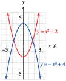

Section 3.3 Graphing Parabolas
¶Subsection Introduction
The graph of the quadratic equation \(y = ax^2 + bx + c\) is called a parabola. Some parabolas are shown below.
All these parabolas share certain features.
- The graph has either a highest point (if the parabola opens downward, as in figure (a) or a lowest point (if the parabola opens upward, as in figure (b). This high or low point is called the vertex of the graph.
- The parabola is symmetric about a vertical line, called the axis of symmetry, that runs through the vertex.
- A parabola has a \(y\)-intercept, and it may have zero, one, or two \(x\)-intercepts.
- If there are two \(x\)-intercepts, they are equidistant from the axis of symmetry.
The values of the constants \(a\text{,}\) \(b\text{,}\) and \(c\) determine the location and orientation of the parabola. We'll consider each of these constants separately.
Notebook 3.40. QuickCheck 1.
Subsection The Graph of \(y = ax^2\)
Use your calculator to graph the following three equations in the standard window, as shown below:

You can see that the graph of \(y=3x^2\) is narrower than the basic parabola, and the graph of \(y=0.1x^2\) is wider. As \(x\) increases, the graph of \(y=3x^2\) increases faster than the basic parabola, and the graph of \(y=0.1x^2\) increases more slowly. Compare the corresponding \(x\)-values for the three graphs shown in the table.
| \(x\) | \(y=x^2\) | \(y=3x^2\) | \(y=0.1x^2\) |
| \(-2\) | \(4\) | \(12\) | \(0.4\) |
| \(1\) | \(1\) | \(3\) | \(0.1\) |
| \(3\) | \(9\) | \(27\) | \(0.9\) |
For each \(x\)-value, the points on the graph of \(y=3x^2\) are higher than the points on the basic parabola, while the points on the graph of \(y=0.1x^2\) are lower. Multiplying by a positive constant greater than 1 stretches the graph vertically, and multiplying by a positive constant less than 1 squashes the graph vertically.
What about negative values for \(a\text{?}\) Consider the graphs of
We see that multiplying \(x^2\) by a negative constant reflects the graph about the \(x\)-axis. These parabolas open downward.
The Graph of \(y=ax^2\).
- The parabola opens upward if \(a \gt 0\)
- The parabola opens downward if \(a \lt 0\)
- The magnitude of \(a\) determines how wide or narrow the parabola is.
- The vertex, the \(x\)-intercepts, and the \(y\)-intercept all coincide at the origin.
Example 3.41.
Sketch by hand a graph of each quadratic equation.
- \(\displaystyle y = 2x^2\)
- \(\displaystyle y = -\dfrac{1}{2}x^2\)
Both equations have the form \(y = ax^2\text{.}\) The graph of \(y = 2x^2\) opens upward because \(a = 2 \gt 0\text{,}\) and the graph of \(y = -\dfrac{1}{2}x^2\) opens downward because \(a = -\dfrac{1}{2}\lt 0\text{.}\)
To make a reasonable sketch by hand, it is enough to plot a few guidepoints; the points with \(x\)-coordinates \(1\) and \(-1\) are easy to compute.

| \(x\) | \(y=2x^2\) | \(y=-\frac{1}{2}x^2\) |
| \(-1\) | \(2\) | \(-\dfrac{1}{2}\) |
| \(0\) | \(0\) | \(0\) |
| \(1\) | \(2\) | \(-\dfrac{1}{2}\) |
We sketch parabolas through each set of guidepoints, as shown at left.
Notebook 3.42. QuickCheck 2.
Notebook 3.43. Practice 1.
Subsection The Graph of \(y= x^2 + c\)
Next, we consider the effect of the constant term, \(c\text{,}\) on the graph. Compare the graphs of
The graph of \(y=x^2+4\) is shifted upward four units compared to the basic parabola, and the graph of \(y=x^2-4\) is shifted downward four units. Look at the table, which shows the \(y\)-values for the three graphs.
| \(x\) | \(y=x^2\) | \(y=x^2+4\) | \(y=x^2-4\) |
| \(-1\) | \(1\) | \(5\) | \(-3\) |
| \(0\) | \(0\) | \(4\) | \(-4\) |
| \(2\) | \(4\) | \(8\) | \(0\) |
Each point on the graph of \(y=x^2+4\) is four units higher than the corresponding point on the basic parabola, and each point on the graph of \(y=x^2-4\) is four units lower. In particular, the vertex of the graph of \(y=x^2+4\) is the point \((0,4)\text{,}\) and the vertex of the graph of \(y=x^2-4\) is the point \((0,-4)\text{.}\)
The Graph of \(y=x^2+c\).
Compared th the graph of \(y=x^2\text{,}\) the graph of \(y=x^2+c\)
- is shifted upward by \(c\) units if \(c \gt 0\)
- is shifted downward by \(c\) units if \(c \lt 0\)
Example 3.44.
Sketch graphs for the following quadratic equations.
- \(\displaystyle y = x^2 - 2\)
- \(\displaystyle y = -x^2 + 4\)
-
The graph of \(y = x^2 - 2\) is shifted downward by two units, compared to the basic parabola. The vertex is the point \((0, -2)\) and the \(x\)-intercepts are the solutions of the equation
\begin{equation*} 0 = x^2 - 2 \end{equation*}or \(\sqrt{2}\) and \(-\sqrt{2}\text{.}\) The graph is shown below.
 -
The graph of \(y = -x^2 + 4\) opens downward and is shifted \(4\) units up, compared to the basic parabola. Its vertex is the point \((0, 4)\text{.}\) Its \(x\)-intercepts are the solutions of the equation
\begin{equation*} 0 = -x^2 + 4 \end{equation*}or \(2\) and \(-2\text{.}\) You can verify both graphs with your graphing calculator.
Notebook 3.45. QuickCheck 3.
Notebook 3.46. Practice 2.

Subsection The Graph of \(y = ax^2 + bx\)
How does the linear term, \(bx\text{,}\) affect the graph?
Example 3.47.
Describe the graph of the equation
The graph in the standard window is shown below. We see that the axis of symmetry for this parabola is not the \(y\)-axis: the graph is shifted to the left, compared to the basic parabola. We find the \(y\)-intercepts of the graph by setting \(y\) equal to zero:
The solutions of this equation are \(0\) and \(-4\text{,}\) so the \(x\)-intercepts are the points \((0, 0)\) and \((-4, 0)\text{.}\)

We can find the vertex of the graph by using the symmetry of the parabola. The \(x\)-coordinate of the vertex lies exactly half-way between the \(x\)-intercepts, so we average their \(x\)-coordinates to find:
To find the \(y\)-coordinate of the vertex, substitute \(x = -2\) into the equation for the parabola:
Thus, the vertex is the point \((-2,-8)\text{.}\)
Notebook 3.48. Practice 3.
Notebook 3.49. QuickCheck 4.
Subsection A formula for the Vertex
We can find a formula for the vertex of any parabola of the form
First, find the \(x\)-intercepts of the graph by setting \(y\) equal to zero and solving for \(x\text{.}\)
The \(x\)-intercepts are the points \((0, 0)\) and \((\dfrac{-b}{a}, 0)\text{.}\)
Next, we find the \(x\)-coordinate of the vertex by taking the average of the two \(x\)-intercepts.
Now we have a formula for the \(x\)-coordinate of the vertex.
Vertex of a Parabola.
For the graph of \(y = ax^2 + bx\text{,}\) the \(x\)-coordinate of the vertex is
We find the \(y\)-coordinate of the vertex by substituting its \(x\)-coordinate into the equation for the parabola.
Example 3.50.
- Find the vertex of the graph of \(f(x) = -1.8x^2 - 16.2x\text{.}\)
- Find the \(x\)-intercepts of the graph.
- The \(x\)-coordinate of the vertex is\begin{equation*} x_v=\frac{-b}{2a}=\frac{-(-16.2)}{2(-1.8)}=-4.5 \end{equation*}To find the \(y\)-coordinate of the vertex, evaluate \(f(x)\) at \(x = \alert{-4.5}\text{.}\)\begin{equation*} y_v=-1.8(\alert{-4.5})^2 - 16.2(\alert{-4.5}) = 36.45 \end{equation*}The vertex is \((-4.5, 36.45)\text{.}\)
- To find the \(x\)-intercepts of the graph, set \(y = 0\) and solve.\begin{align*} -1.8x^2 - 16.2x \amp= 0\amp\amp \glert{\text{Factor.}}\\ -x(1.8x + 16.2) \amp= 0\amp\amp \glert{\text{Set each factor equal to zero.}}\\ -x =0 \hphantom{blank} 1.8x + 16.2 \amp = 0\amp\amp \glert{\text{Solve each equation.}}\\ x = 0 \hphantom{blankblankblan} x \amp= -9 \end{align*}The \(x\)-intercepts of the graph are \((0, 0)\) and \((-9, 0)\text{.}\) The graph is shown below.

Notebook 3.51. QuickCheck 5.

Notebook 3.52. Practice 4.
Exercises Problem Set 3.3
¶Skills Practice
1.
Match each equation with its graph. In each equation, \(k \gt 0\text{.}\)
- \(\displaystyle y=x^2+k\)
- \(\displaystyle y=x^2+kx \)
- \(\displaystyle y=kx^2\)
- \(\displaystyle y=kx \)
- \(\displaystyle y=x+k\)
- \(\displaystyle y=x^2-k \)
For Problems 2 and 3, factor the right side of the formula.
2.
\(A=\dfrac{1}{2}bh + \dfrac{1}{2}h^2\)3.
\(S=2 \pi R^2+2 \pi RH\)For Problems 4 and 5, solve the equation.
4.
\(-9x=81x^2\)5.
\(0=-140x-4x^2\)For problems 6 and 7, which technique would you use to solve the equation, extracting roots or factoring? Then solve the equation.
6.
- \(\displaystyle 3x^2-15=0\)
- \(\displaystyle 3x^2-15x=0\)
- \(\displaystyle (2x-3)^2=9\)
- \(\displaystyle 2x^2-3x=9\)
7.
- \(\displaystyle 20x-2x^2\)
- \(\displaystyle 20=2x^2\)
- \(\displaystyle 4x^2=2+2x\)
- \(\displaystyle 4(x+2)^2-1=0\)
8.
Match each equation with its graph. In each equation, \(k \gt 0\text{.}\)
\(y=-kx\)
\(y=-kx^2 \)
\(y=k-x^2\)
\(y=x-k \)
\(y=k-x\)
\(y=x^2-kx \)
For Problems 9 and 10, find the \(x\)-intercepts and the vertex of the graph. Then sketch the graph by hand.
9.
- \(\displaystyle y=x^2-4x\)
- \(\displaystyle y=x^2+2x\)
10.
- \(\displaystyle y=3x^2+6x\)
- \(\displaystyle y=-2x^2+5x\)
Applications
For problems 11-12, find the \(x\)-intercepts and the vertex of each graph. Then sketch the graph.
11.
\(y=225-x^2\)12.
\(y=40x-2x^2\)13.
Commercial fishermen rely on a steady supply of fish in their area. To avoid overfishing, they adjust their harvest to the size of the population. The formula
gives the annual rate of growth, in tons per year, of a fish population of biomass \(x\) tons.
- Find the vertex of the graph. What does it tell us about the fish population?
- Find the \(x\)-intercepts of the graph. What do they tell us about the fish population?
-
Sketch the graph for \(0 \le x \le 5000\text{.}\)
- For what values of \(x\) does the fish population decrease rather than increase? Suggest a reason why the population might decrease.
14.
After it lands on Earth, the distance the space shuttle travels is given by
where \(v\) is the shuttle's velocity in ft/sec at touchdown, \(T\) is the pilot's reaction time before the brakes are applied, and \(a\) is the shuttle's deceleration.
- Suppose that for a particular landing, \(T=0.5\) seconds and \(a=12\) ft/sec. Write the equation for \(d\) in terms of \(v\text{,}\) using these values.
- Find the coordinates of the vertex and the horizontal intercepts of the graph of your equation. Use these points to help you graph the equation.
- Explain the meaning of the vertex and the intercepts, if any, in this context. As \(v\) increases, what happens to \(d\text{?}\)
- The runway at Edwards Air Force base is 15,000 feet long. Graph your equation again in an appropriate (larger) window, and use it to estimate the answer to the question: What is the maximum velocity the shuttle can have at touchdown and still stop on the runway?
For problems 15-18, graph the set of equations in the standard window on your calculator. Describe how the parameters \(a,~b,~\) and \(c\) in each equation transform the graph, compared to the basic parabola.
15.
- \(\displaystyle y=x^2\)
- \(\displaystyle y=3x^2\)
- \(\displaystyle y=\dfrac{1}{4}x^2\)
- \(\displaystyle y=-2x^2\)
16.
- \(\displaystyle y=x^2\)
- \(\displaystyle y=x^2+1\)
- \(\displaystyle y=x^2+3\)
- \(\displaystyle y=x^2-6\)
17.
- \(\displaystyle y=x^2-4x\)
- \(\displaystyle y=x^2+4x\)
- \(\displaystyle y=4x-x^2\)
- \(\displaystyle y=-x^2-4x\)
18.
- \(\displaystyle y=x^2-4x\)
- \(\displaystyle y=2x^2-8x\)
- \(\displaystyle y=\dfrac{1}{2}x^2-2x\)
- \(\displaystyle y=-x^2+4x\)